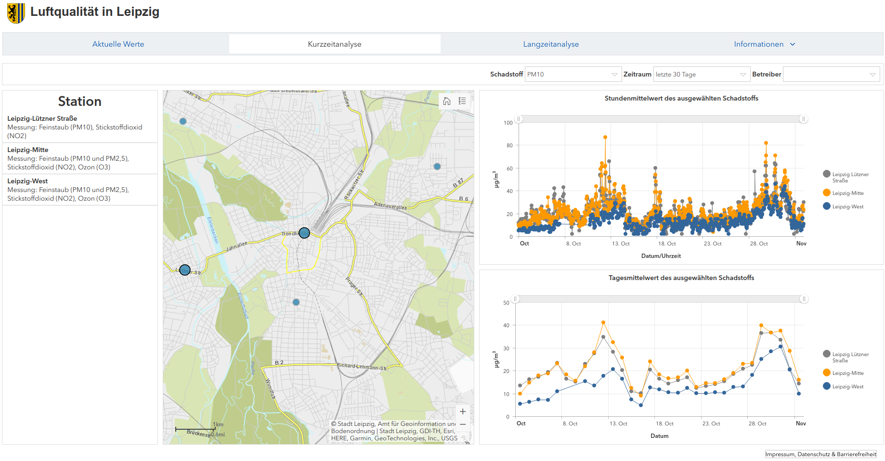
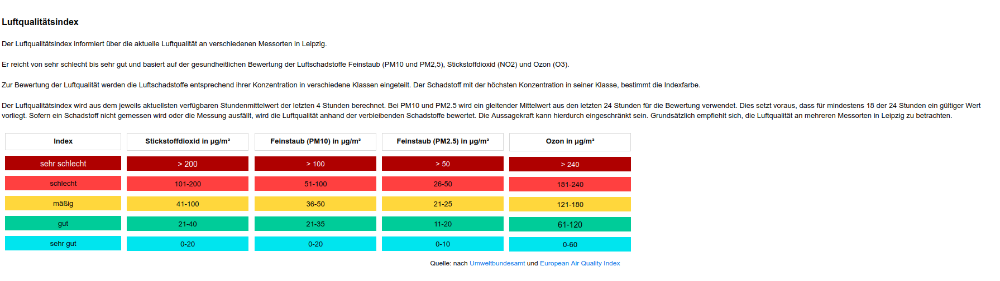

Analyse der Luftqualität in Leipzig#
Wir analysieren die Luftqualität in Leipzig basierend auf den Daten des Geoportals Leipzig
Python Grundlagen:
Listen
if-Bedingungen
For-Schleifen.

Hintergrund PM10#
Atmosphärische Partikel (PM) sind mikroskopische feste oder flüssige Materie, die in der Luft suspendiert sind. […] Von größter Bedeutung für die Bevölkerungsgesundheit sind die Partikel, die klein genug sind, um in die tiefsten Teile der Lunge eingeatmet zu werden. Diese Partikel haben einen Durchmesser von weniger als 10 Mikrometer (ungefähr 1/7 der Dicke eines menschlichen Haares) und sind als PM10 definiert. PM10 ist eine Mischung aus Materialien wie Rauch, Ruß, Staub, Salz, Säuren und Metallen. […] PM10 wird häufig als Nebel wahrgenommen, den man auch als Smog bezeichnet. PM10 gehört zu den schädlichsten aller Luftschadstoffe, da
PM10 kann die Anzahl und den Schweregrad von Asthmaanfällen erhöhen
PM10 verursacht oder verschlimmert Bronchitis und andere Lungenerkrankungen
PM10 reduziert die Fähigkeit des Körpers, Infektionen zu bekämpfen
Quelle: https://www.meteoblue.com/de/wetter/outdoorsports/airquality/leipzig_deutschland_2879139
PM10 Daten#
# Feinstaub PM10 in Mikrometer / Kubikmeter
pm10 = [15, 15, 16, 19, 23, 23, 40, 37, 38, 29, 16]
[15, 15, 16, 19, 23, 23, 40, 37, 38, 29, 16]
<class 'list'>
Luftqualität Leipzig - Erste Analyse#
Wie viele Messungen sind vorhanden?
Was ist der maximale Feinstaubwert? Welcher der minimale? Was der Durchschnittswert?
# Wie viele PM10 Wert Messungen sind in den Daten?
Grundlegende Statistik#
# Berechne den maximalen PM10 Wert
# Berechne den minimalen PM10 Wert
# Berechne den durchschnittlichen PM10 Wert
# Wie häufig sind die Min / Max Messwerte?
# An welchem Tag (nach Beginn der Messung) wurde der maximale Wert erreicht?
# Sortiere die pm10 Werte aufsteigend
# Sortiere die pm10 Werte absteigend
Warnsystem#
Ziel: Ein Warnsystem falls die Luftqualität in den gelben Bereich abrutscht.

pm10 = [15, 15, 16, 19, 23, 23, 40, 37, 38, 29, 16]
# 1. Schritt: Gib jeden Messwert aus
# 2. Schritt: Falls die Schwelle von 36 Mikrogramm PM10 erreicht werden gib eine Warnung aus
Aufgaben:#
Angenommen:
(1) Die Stadt Leipzig verkündet, dasss die Messstation falsch geeicht wurden und alle Werte zum 1,3 µg/m³ zu niedrig sind. Erstelle eine neue Liste mit den angepassten Messwerten
(2) Werte von über 36 µg/m³ sind gesundheitsschädlich. Wie oft wurden diese Grenze überschritten?
(3) Wie weit liegen die Messwerte über oder unter der Grenze von 36 µg/m³
# (1) Korrektur der Messwerte
# (2) Gesundheitsschädliche Werte
# (3) Differenz zur Grenze